図解：ラファエル前派
ラファエル前派の誕生と展開
- 1768〜
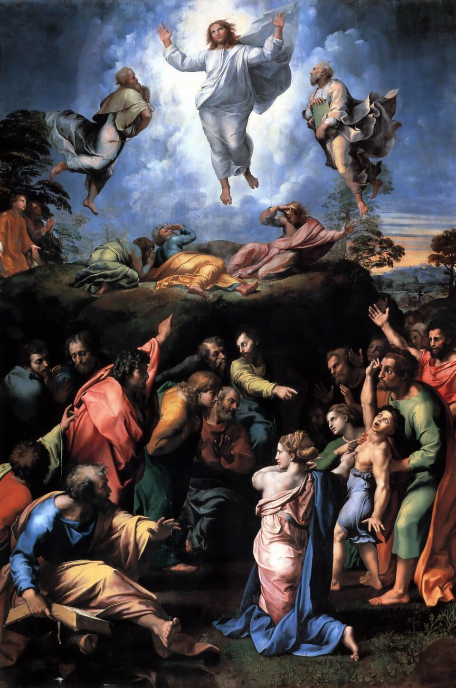
アカデミーの規範ラファエロが手本 - 1848
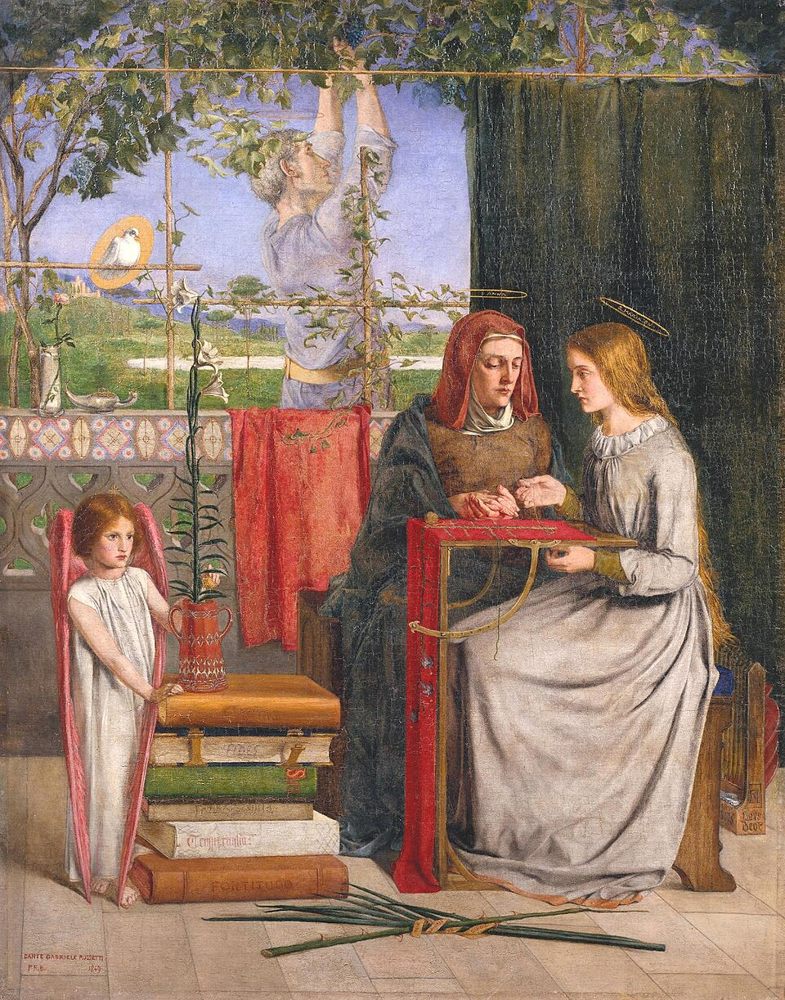
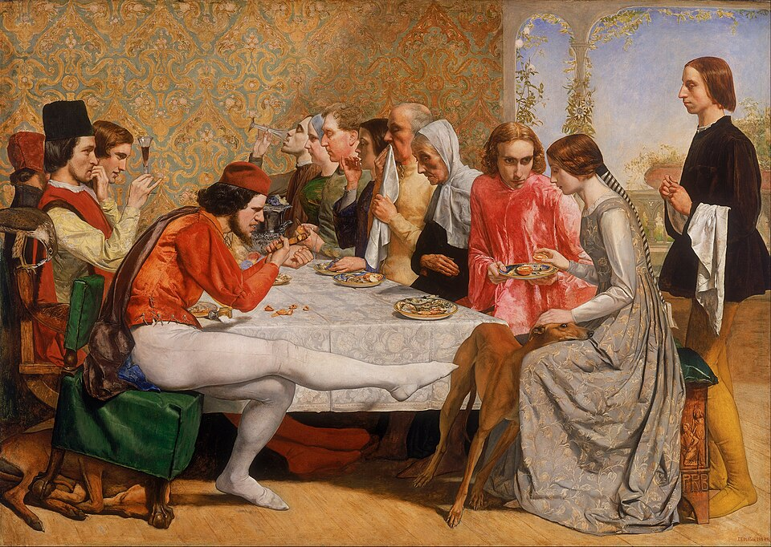
学生が兄弟団結成中心は三人
ラジーニオに学ぶ - 1850

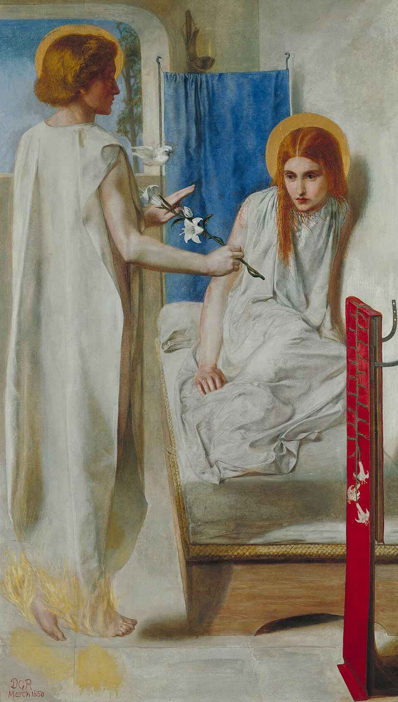
宗教画が非難されるラスキンが擁護 - 1852
 文学の主題で成功《オフィーリア》
文学の主題で成功《オフィーリア》
が好評を博す - 1856〜
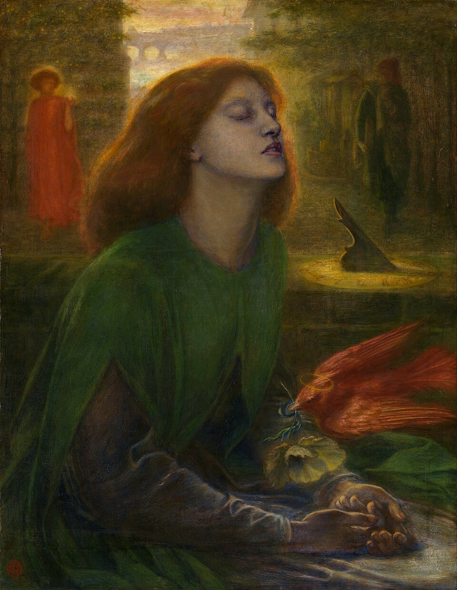
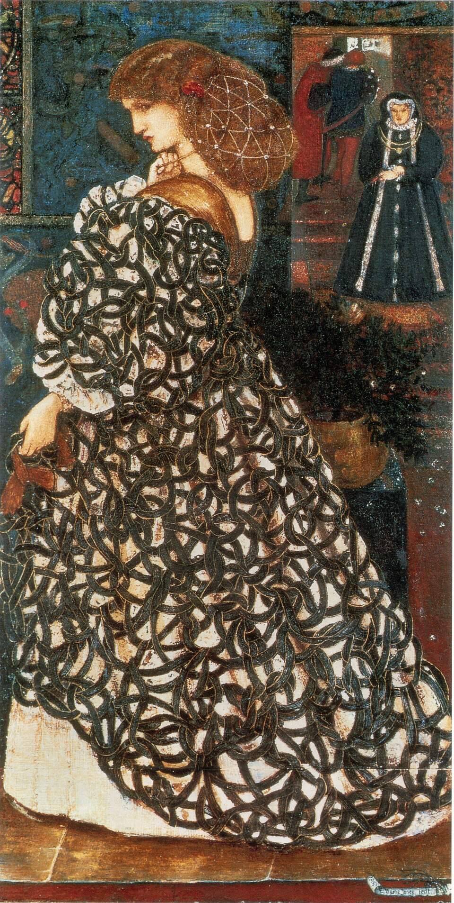
第二世代へ装飾芸術と
象徴主義の源泉
アカデミーと何が違うか
図版の出典
- 《キリストの変容》ラファエロ・サンツィオ：出典（Public domain（PD-Art／PDM））
- 《聖母マリアの少女時代》ダンテ・ゲイブリエル・ロセッティ：出典（Public domain（PD-Art／PDM））
- 《イザベラ（ロレンツォとイザベラ）》ジョン・エヴァレット・ミレイ：出典（Public domain（PD-Art／PDM））
- 《両親の家のキリスト（大工の仕事場）》ジョン・エヴァレット・ミレイ：出典（Public domain（PD-Art／PDM））
- 《受胎告知（エッケ・アンチッラ・ドミニ）》ダンテ・ゲイブリエル・ロセッティ：出典（Public domain（PD-Art／PDM））
- 《オフィーリア》ジョン・エヴァレット・ミレイ：出典（Public domain（PD-Art／PDM））
- 《ベアタ・ベアトリクス》ダンテ・ゲイブリエル・ロセッティ：出典（Public domain（PD-Art／PDM））
- 《シドニア・フォン・ボルク》エドワード・バーン＝ジョーンズ：出典（Public domain（PD-Art／PDM））
重要人物
中心の三人
 ダンテ・ゲイブリエル・ロセッティ画家・詩人《受胎告知》で批判を招く。後に第二世代を導く
ダンテ・ゲイブリエル・ロセッティ画家・詩人《受胎告知》で批判を招く。後に第二世代を導く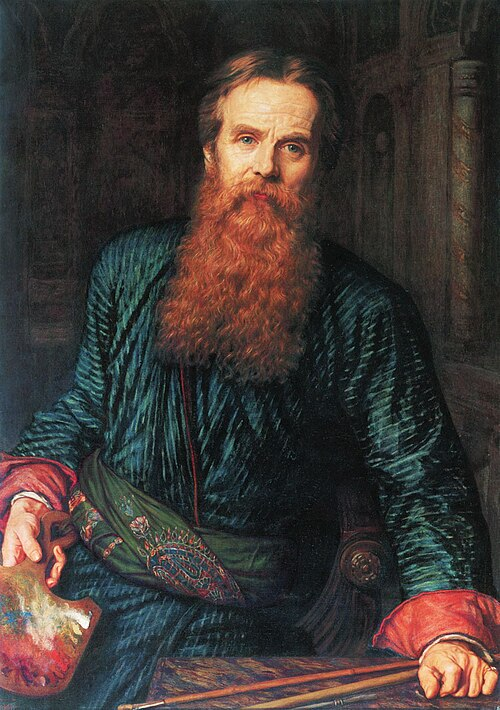
ウィリアム・ホルマン・ハント画家離散後も初期の理念を守り、写実を徹底 ジョン・エヴァレット・ミレイ画家《オフィーリア》で成功。後にアカデミー会長
ジョン・エヴァレット・ミレイ画家《オフィーリア》で成功。後にアカデミー会長
結成時の仲間
- ウィリアム・マイケル・ロセッティ記録者ロセッティの弟。前派の四つの目的を記録
- ジェームズ・コリンソン画家熱心なカトリック教徒。1850年に脱退
- トマス・ウールナー彫刻家唯一の彫刻家。1852年オーストラリアへ
支えた人・反発された人・モデル
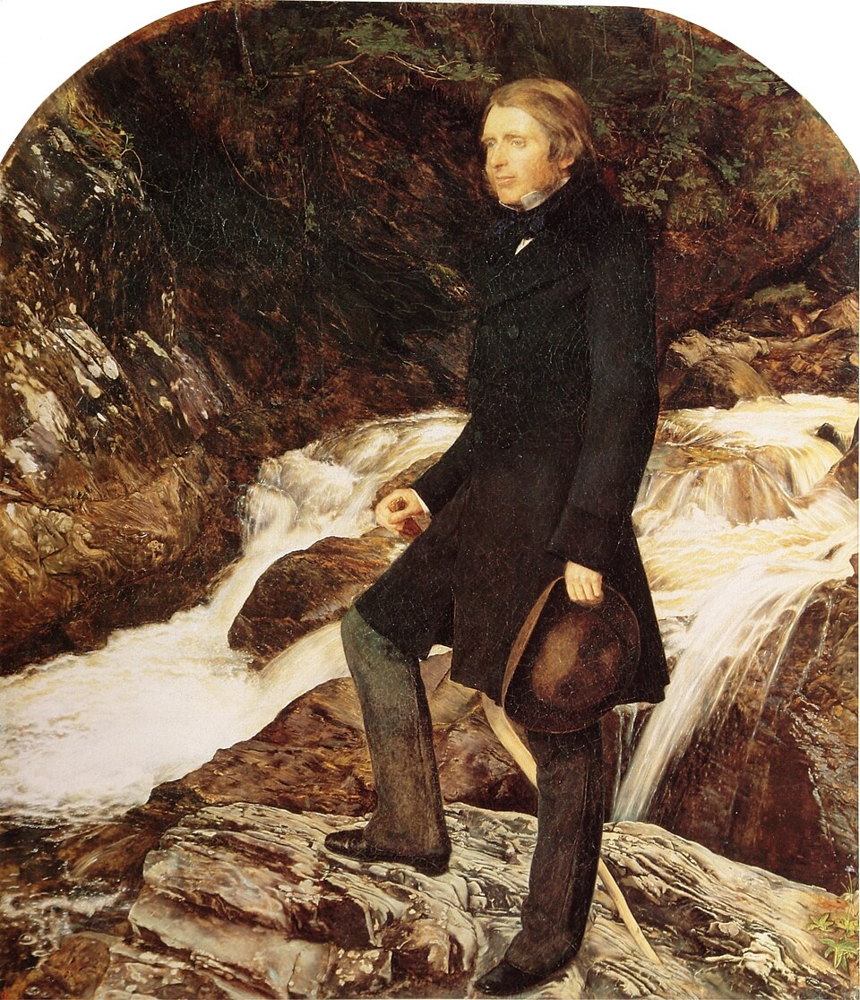
ジョン・ラスキン美術評論家「芸術は自然に忠実であれ」。批判の中で擁護- カルロ・ラジーニオ版画家フレスコ画を模刻した版画集が三人を魅了
- ジョシュア・レノルズ初代会長グランド・マナーを重視。「スロシュア」と皮肉られる
- エリザベス・シダルモデル《オフィーリア》のモデル。ロセッティの妻
- エフィー・グレイラスキンの妻婚姻解消を求め、後にミレイと再婚
第二世代と周辺
 バーン＝ジョーンズ画家神秘的な女性像を描き、象徴主義の源泉に
バーン＝ジョーンズ画家神秘的な女性像を描き、象徴主義の源泉に モリスデザイナーアーツ・アンド・クラフツ運動の中心人物
モリスデザイナーアーツ・アンド・クラフツ運動の中心人物- ジョン・ブレット画家ハントの影響を受け、リアリズムを追う
- フォード・マドックス・ブラウン画家ロセッティと交流したが加入はしなかった
肖像・図版の出典
- 《自画像》ダンテ・ゲイブリエル・ロセッティ、1847年、ナショナル・ポートレート・ギャラリー（ロンドン）：出典（Public domain）
- 《自画像》ウィリアム・ホルマン・ハント、1867年、ウフィツィ美術館：出典（Public domain）
- 《ジョン・エヴァレット・ミレイの肖像》ジョージ・フレデリック・ワッツ、1871年、ナショナル・ポートレート・ギャラリー（ロンドン）：出典（Public domain）
- 《ジョン・ラスキンの肖像》ジョン・エヴァレット・ミレイ：出典（Public domain（PD-Art／PDM））
- 《オフィーリア》ジョン・エヴァレット・ミレイ：出典（Public domain（PD-Art／PDM））
- エドワード・バーン＝ジョーンズの写真、フレデリック・ホリヤー撮影、1882年頃：出典（Public domain）
- ウィリアム・モリスの写真、フレデリック・ホリヤー撮影、1887年：出典（Public domain）
ラファエル前派とは
ラファエル以前へ戻る運動と四つの目的
動画 1:49～19世紀半ばに活動したラファエル前派は、短い活動期間ながら、ラファエロ以前の絵画に立ち返る革新的な運動を起こしました。ラファエルとは、盛期ルネサンスの巨匠ラファエロ・サンティの英語での呼び方です。チャールズがカールやシャルルと呼ばれるのと同じように、イギリスではこの呼称を用います。
1848年秋、ダンテ・ゲイブリエル・ロセッティ、ウィリアム・ホルマン・ハント、ジョン・エヴァレット・ミレイ、ジェームズ・コリンソン、トマス・ウールナー、スティーヴンズ、ウィリアム・マイケル・ロセッティの七人で結成されました。中心となるのはロセッティ、ハント、ミレイの三人です。結成当時はまだ芸術学校の学生で、理念や結び付きも十分に固まっていませんでした。
ウィリアム・マイケル・ロセッティは、その目的を四つ記録しています。第一に、表現すべき本物のアイデアを持つこと。第二に、その表現方法を学ぶため自然を注意深く観察すること。第三に、慣習や自己顕示、決まりきった方法で身に付けた型を拒み、過去の芸術にある率直で真剣で誠実なものへ共感を寄せること。そして最も不可欠な第四の目的は、最良で優れた絵画や彫刻を制作することでした。その背景には、イギリスの歴史と美術教育の問題がありました。
イギリスの美術と反発
強国イギリスとロイヤル・アカデミー
動画 3:42～18世紀、イギリスは西洋の強国となりました。スペイン継承戦争ではフランスとの戦いを優位に進め、ルイ14世の孫をスペイン王として認める代わりに、フランスやスペインから北米の植民地を獲得します。これを機に植民地貿易が拡大し、フランスとの戦争を遂行するため軍事力や財政も整備されました。財政軍事国家への変化は、予算を決める議会の重要性を高め、議会政治を活発にしました。
三圃制農業に代わるノーフォーク農法による農業革命で人口が増え、産業革命による大量生産も進みました。「世界の工場」と呼ばれるほど工業が発展し、他国に先駆けてさまざまな先進的な取り組みを実現します。一方で、遅れた分野とされたのが芸術でした。16～17世紀の肖像画はホルバインやヴァン・ダイクなど外国出身の画家に任され、イギリス人の芸術家が育ちにくかったのです。
 画像を拡大 ＋
画像を拡大 ＋
《狩場のチャールズ1世》
- 作者
- アンソニー・ヴァン・ダイク
- 制作時期
- 1635年頃
- 所在地・所蔵
- ルーヴル美術館
- 素材・形式
- 油彩画
出典・画像について
その遅れを取り戻し、国内の芸術家を育てるため、1768年にロイヤル・アカデミー・オブ・アーツが設立されました。初代会長ジョシュア・レノルズは、設立前にイタリアでラファエロやミケランジェロらを研究し、巨匠の様式であるグランド・マナーを重視します。裕福な貴族の間でも、イタリアなどを訪れて文化を学ぶグランド・ツアーが流行し、イギリスの画家は技術を急速に身に付け、国内から宮廷画家も生まれるようになりました。
ナポレオンの台頭で国際情勢が緊張すると、イタリアへの訪問は制限されました。しかし、それは自国へ目を向ける機会にもなり、風景画はフランスに先駆けて発展します。19世紀初頭には、コンスタブルやターナーらロマン主義の画家によって、それまで他国を追っていたイギリス絵画に独自性が生まれました。それでもアカデミーの教育はラファエロを範とするグランド・マナーを重視しており、学生たちの反発からラファエル前派が登場しました。

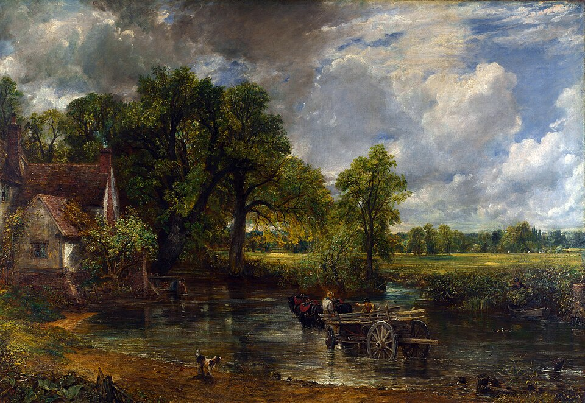
画像を拡大 ＋《干草の車》
- 作者
- ジョン・コンスタブル
- 制作時期
- 1821年
- 所在地・所蔵
- ナショナル・ギャラリー、ロンドン
- 素材・形式
- 油彩画
出典・画像について
 画像を拡大 ＋
画像を拡大 ＋
《雨、蒸気、速度―グレート・ウェスタン鉄道》
- 作者
- ジョゼフ・マロード・ウィリアム・ターナー
- 制作時期
- 1844年
- 所在地・所蔵
- ナショナル・ギャラリー、ロンドン
- 素材・形式
- 油彩画
出典・画像について
ヴィクトリア朝の画壇と美術教育への反発
動画 6:31～1837年のヴィクトリア女王即位から、イギリスが大きく発展するヴィクトリア朝が始まります。文学では格差社会を風刺する小説が流行し、ディケンズやサッカレーが、今も映像化される名作を生みました。画家も挿絵や風俗画で成功しましたが、小説の目新しさに比べ、作品には革新性が乏しいと見られました。誰が描いても似た画風となり、技巧の優劣だけが違うような傾向が、ロイヤル・アカデミー展のたびに現れていたのです。

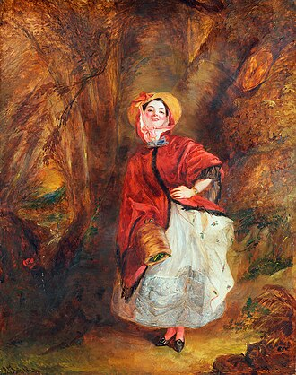
画像を拡大 ＋《ドリー・ヴァーデン》
- 作者
- ウィリアム・パウエル・フリス
- 制作時期
- 1842年
- 所在地・所蔵
- ヴィクトリア・アンド・アルバート博物館（F.8）
- 素材・形式
- 油彩画
出典・画像について

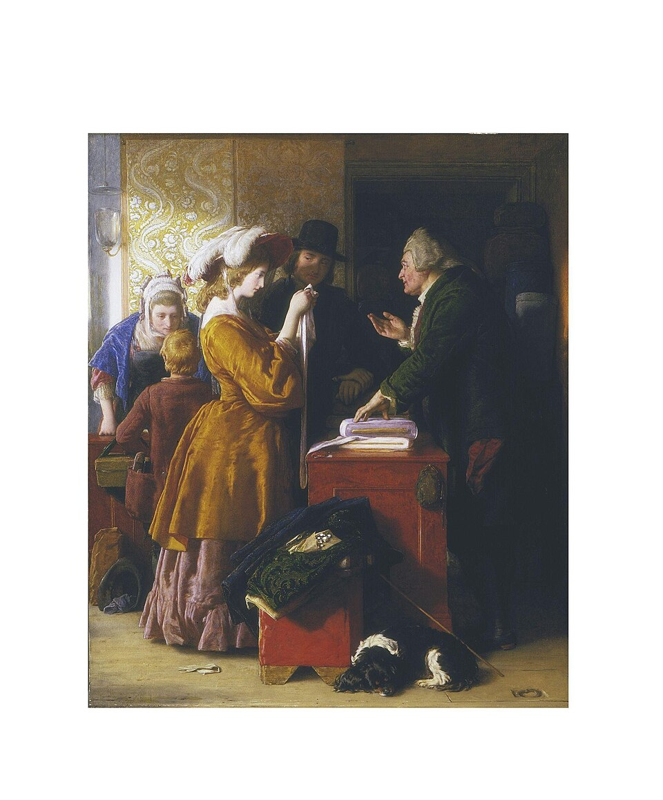
画像を拡大 ＋《ウェディングドレスの選択》
- 作者
- ウィリアム・マルレディ
- 制作時期
- 1845年
- 所在地・所蔵
- ヴィクトリア・アンド・アルバート博物館（FA.145[O]）
- 素材・形式
- 油彩画
出典・画像について
若い画家たちは、その原因を伝統的な美術教育に求めました。とりわけ軽蔑したのが初代会長レノルズです。名前のジョシュアと、ばしゃばしゃと跳ねることを意味する語を重ね、「スロシュア（Sloshua）」というあだ名で筆遣いを皮肉りました。批判はラファエロにも向かい、ナショナル・ギャラリーに展示された作品の複製を、仰々しいと評します。本人を否定するというより、その権威を称賛し続ける人々へ対抗したいという、若い学生の反骨心がありました。

《キリストの変容》
- 作者
- ラファエロ・サンツィオ
- 制作時期
- 1516～1520年
- 所在地・所蔵
- ヴァチカン絵画館
- 素材・形式
- 油彩画
出典・画像について
掲載はヴァチカン所蔵原画の図像。動画が批判の対象として述べるロンドンの複製そのものではありません。
画像出典：Raphael
Public domain（PD-Art／PDM）
作品情報：作品・画像・利用条件
結成と出発
三人の出会いとラスキン、ラジーニオ
動画 7:58～裕福な家庭に生まれたミレイは、才能に恵まれ、十一歳という史上最年少でアカデミーに入学しました。しかし教授法に不満を持ち、革新的な画家たちに加わります。1844年に入学したハントは質素な家庭の出身で、家族の説得にも苦労しましたが、二人は意気投合し、美術教育への不満を語り合いました。
二人がさらに出会ったのがロセッティでした。ダンテ研究者の父から同じ名を与えられ、勤勉な学生ではなかったものの、詩人としても活動しました。ロマン派文学に親しんだ趣味は、後の詩的表現にも現れています。三人は1848年、作品を相互批評するサイクログラフィック協会に参加し、その活動からラファエル前派の構想を膨らませたといわれます。
三人の考えを支えたのが、美術評論家ジョン・ラスキンです。ターナーは自然を注意深く観察し、光を追究した結果、晩年には対象を抽象化するような新しい絵画へ進みました。その姿勢に刺激を受けたラスキンの「芸術は自然に忠実であれ」という趣旨の主張は、三人の考えと一致していました。
もう一人の影響源は、イタリアの版画家カルロ・ラジーニオです。18世紀後半から19世紀前半にかけ、自国のフレスコ画を模刻し、版画集として販売しました。三人はミレイの家に集まり、明確な線と遠近感の乏しい表現に目を奪われます。アカデミーで学んだものと全く異なっていたからです。盛期ルネサンスの技巧だけを優れたものとせず、中世や初期ルネサンスの特質を新しい視点で見直し、伝統を破る力を見いだしたのでした。

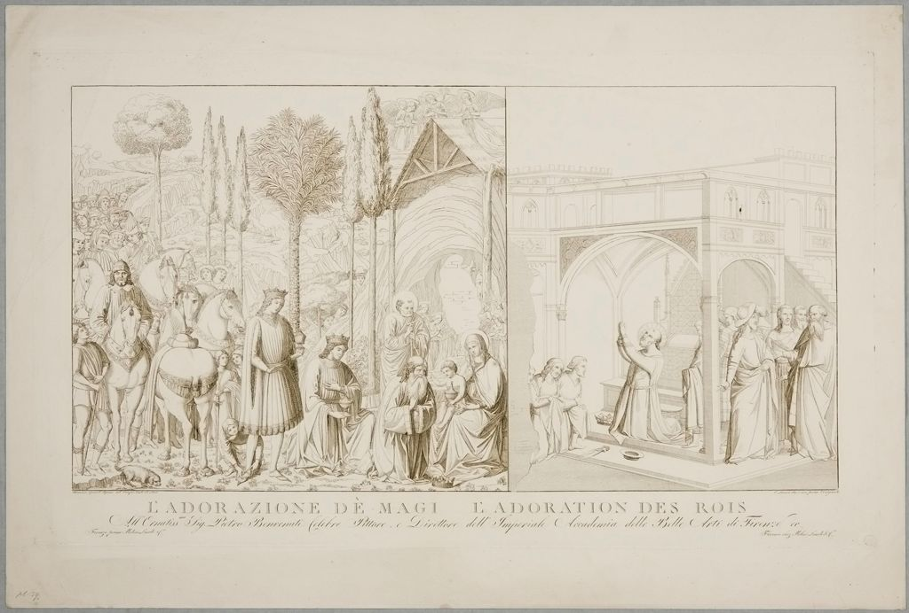
画像を拡大 ＋《東方三博士の礼拝（ゴッツォリ原作に基づく版画）》
- 作者
- カルロ・ラジーニオ
- 制作時期
- 未確認（動画表示1822年頃）
- 所在地・所蔵
- 所蔵個体未確認
- 素材・形式
- 版画
出典・画像について
カルロ・ラジーニオによるゴッツォリ原作《東方三博士の礼拝》の版画（ワシントン・ナショナル・ギャラリー所蔵の刷り）。
画像出典：Carlo Lasinio / Wikimedia Commons
Public domain
作品情報：画像出典・利用条件 · 作品・画像・利用条件
制作メモ
動画580秒の画面は同じ版画の左図の中央部分を拡大したもの。
秘密の署名PRBと順調な出発
動画 10:12～三人に、同じアカデミーのコリンソン、ウールナー、スティーヴンズ、そしてロセッティの弟ウィリアム・マイケルが加わって結成されました。1849年には、緻密な写実と初期ルネサンスを思わせる重なり合う構図を備えた作品を発表します。この構図には、ラジーニオの版画集から学んだ表現が現れていました。画面に刻まれたPRBは、Pre-Raphaelite Brotherhood、つまりラファエル前派兄弟団の略ですが、その意味はまだ仲間だけの秘密でした。
ロセッティの最初の大作《聖母マリアの少女時代》は、初期ルネサンスの構図と写実主義を組み合わせたものです。ハントは歴史小説『最後の護民官リエンツィ』の一場面を描き、ミレイはボッカチオの小話を再構成したキーツの詩『イザベラ、あるいはバジルの鉢』から着想して《イザベラ》を描きました。三作は売れ、厳しい批評もなく、理念を公表しないまま順調な出発を飾ります。

《聖母マリアの少女時代》
- 作者
- ダンテ・ゲイブリエル・ロセッティ
- 制作時期
- 1848～1849年
- 所在地・所蔵
- テート・ブリテン（N04872）
- 素材・形式
- 油彩画
出典・画像について

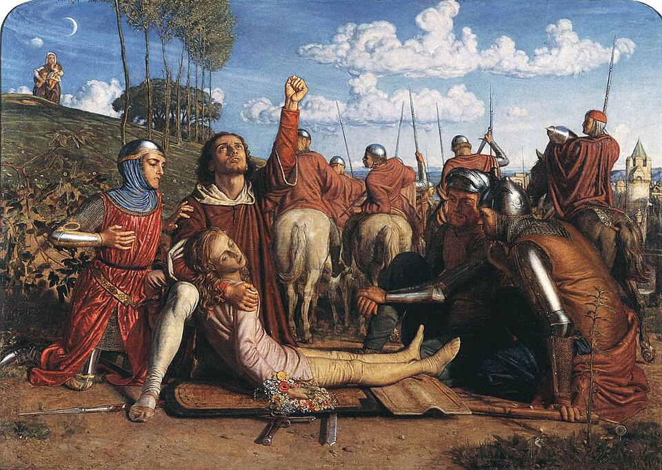
画像を拡大 ＋《弟の死に対する正義を求めることを誓うリエンツィ》
- 作者
- ウィリアム・ホルマン・ハント
- 制作時期
- 1848～1849年
- 所在地・所蔵
- 個人蔵（所有者名未公表）
- 素材・形式
- 油彩画
出典・画像について

《イザベラ（ロレンツォとイザベラ）》
- 作者
- ジョン・エヴァレット・ミレイ
- 制作時期
- 1848～1849年
- 所在地・所蔵
- ウォーカー美術館、リヴァプール（WAG1637）
- 素材・形式
- 油彩画
出典・画像について
自信を得た仲間は、ロセッティを中心に考えを伝える刊行誌『芽』を発行しました。詩と、それに沿う絵を載せ、自然への忠実さと詩・芸術の密接な関係を説きます。しかし初版七百部のうち売れたのは七十部で、四号で廃刊となりました。画壇の変革を目指す意気込みに対し、周囲は無関心だったのです。
批判と成功
《受胎告知》が招いた批判
動画 12:10～1850年4月、ラファエル前派への無関心は激しい批判へ変わります。きっかけはロセッティの《受胎告知》でした。処女マリアの前に天使ガブリエルが現れ、神の子を身ごもったと告げ、マリアが驚きながら受け入れる場面は、ルネサンスからバロックの巨匠も描いた宗教画の定番です。ロセッティはマリアを理想の女性像と考え、前作に続いてこの主題を自分たちの理念に沿って描きました。

《受胎告知（エッケ・アンチッラ・ドミニ）》
- 作者
- ダンテ・ゲイブリエル・ロセッティ
- 制作時期
- 1849～1850年
- 所在地・所蔵
- テート（N01210）
- 素材・形式
- 油彩画
出典・画像について
まず批判されたのが、告知を受けたマリアの表情です。呆然として焦点が合わないように見え、奇妙と受け取られました。しかし、大げさな身振りや顔の動きより、突然の出来事に言葉を失う表情の方が現実的だ、というのが写実を重んじる立場でした。ラファエロがルネサンスからバロックへつなぐ劇的な表現を示したのに対し、若い画家は芝居がかった表現を離れようとしたのです。その斬新さが、図像学的におかしいという非難を招きました。
衣服にも批判が向かいました。過去の受胎告知では、マリアは赤い服と青いマントで描かれます。赤は慈愛、青は聖母を象徴する色です。ロセッティは白を基調とする衣服で純潔を表そうとしましたが、宗教画の伝統をないがしろにすると受け取られ、強く非難されました。

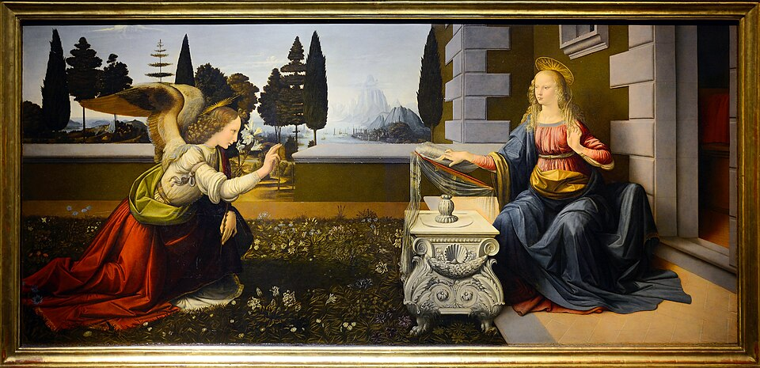
画像を拡大 ＋《受胎告知》
- 作者
- レオナルド・ダ・ヴィンチ
- 制作時期
- 1472年頃
- 所在地・所蔵
- ウフィツィ美術館
- 素材・形式
- 油彩画
出典・画像について
撮影：Livioandronico2013。絵画の権利と写真の利用条件を区別。
画像出典：Livioandronico2013
CC BY-SA 4.0
作品情報：作品・画像・利用条件
制作メモ
CC BY-SA 4.0。
画像の加工：縮小配信・追加加工なし
比較図右上小縦画の作者表示なし。ルーベンスの候補は縦横比に疑問があり同一と確定できず保留。
《受胎告知（比較図の作者未確定作品）》
- 作者
- 未確定
- 制作時期
- 未確定
- 所在地・所蔵
- 未確定
- 素材・形式
- 油彩画
出典・画像について
作品情報：作品・画像・利用条件
 画像を拡大 ＋
画像を拡大 ＋
《受胎告知（サン・マルコ修道院北回廊）》
- 作者
- フラ・アンジェリコ
- 制作時期
- 1438～1450年頃
- 所在地・所蔵
- サン・マルコ美術館、フィレンツェ（北回廊）
- 素材・形式
- フレスコ画
出典・画像について

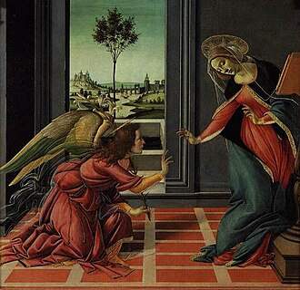
画像を拡大 ＋《チェステッロの受胎告知》
- 作者
- サンドロ・ボッティチェリ
- 制作時期
- 1489～1490年
- 所在地・所蔵
- ウフィツィ美術館（1608）
- 素材・形式
- 油彩画
出典・画像について
画像出典：Sandro Botticelli
Public domain（PD-Art／PDM）
作品情報：作品・画像・利用条件
制作メモ
Commonsの既存画像は額を除く切り抜き。
配信画像は低解像度です。
《大工の仕事場のキリスト》とラスキンの擁護
動画 14:55～同年のロイヤル・アカデミー展では、ミレイの《大工の仕事場のキリスト》がさらに激しい批判を受けました。幼いイエスが養父ヨセフの大工仕事を手伝い、手を切ったことをマリアが心配する場面です。手の傷は後の磔刑、傷を洗う水を用意するヨハネは洗礼、背景の羊は後の信者を予告するなど、神学的な意味が構図に組み込まれていました。
画像を拡大 ＋
《両親の家のキリスト（大工の仕事場）》
- 作者
- ジョン・エヴァレット・ミレイ
- 制作時期
- 1849～1850年
- 所在地・所蔵
- テート（N03584）
- 素材・形式
- 油彩画
出典・画像について
編集注：洗礼の関係
原字幕にはヨハネがイエスから洗礼を受けるという説明がありますが、関係が逆になっています。本文はヨハネと水の洗礼の象徴として記述しました。
ところが、制作の際に出るごみまで省かない写実は、卑しい、汚らしいと嫌悪されました。マリアも年齢相応のしわを隠さず、弱々しく描かれています。親子がともに赤毛であることも、勝手な解釈とされました。こうした要素が重なり、宗教的な人物像を損なうものとして非難されたのです。
理念も周囲に知られ、前派は思い上がった集団と見なされました。人気作家ディケンズまで批判に加わり、ミレイは「酔っ払いのマリア」を描いたと非難されます。その逆境で擁護したのがラスキンでした。この時点で仲間と直接の接点はなかったものの、作品を生む姿勢を評価したのです。
文学へ主題を移す
動画 17:03～ラスキンの擁護を得た仲間は、批判された宗教画を避け、文学的な作品へ移りました。その初期作がミレイの《マリアナ》です。シェイクスピアの『尺には尺を』から着想し、婚約者アンジェロを待つヒロインを細密に描いた表現は、作品の解釈と一致すると絶賛されました。背景のステンドグラスにも中世研究の成果が現れています。

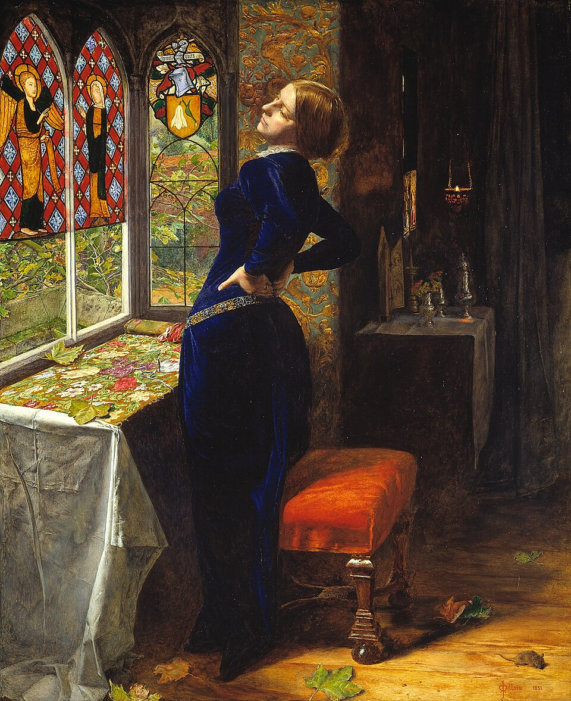
画像を拡大 ＋《マリアーナ》
- 作者
- ジョン・エヴァレット・ミレイ
- 制作時期
- 1851年
- 所在地・所蔵
- テート（T07553）
- 素材・形式
- 油彩画
出典・画像について
翌年には、ハントがシェイクスピアの『リア王』から着想した《雇われ羊飼い》を発表します。同年にはミレイの《オフィーリア》も生まれました。『ハムレット』の主人公の恋人が、父を殺されて理性を失い、溺れ死ぬ場面です。細密描写とともに、浮かぶパンジーやヒヤシンスなどの草花に運命を暗示させる詩的表現があり、前派を代表する傑作となりました。1852年のロイヤル・アカデミー展では批評家と大衆の双方に好評を博します。主題の変更と、ミレイのデッサン力・観察力が成功を導きました。しかし、その結束はほどなく崩れていきます。

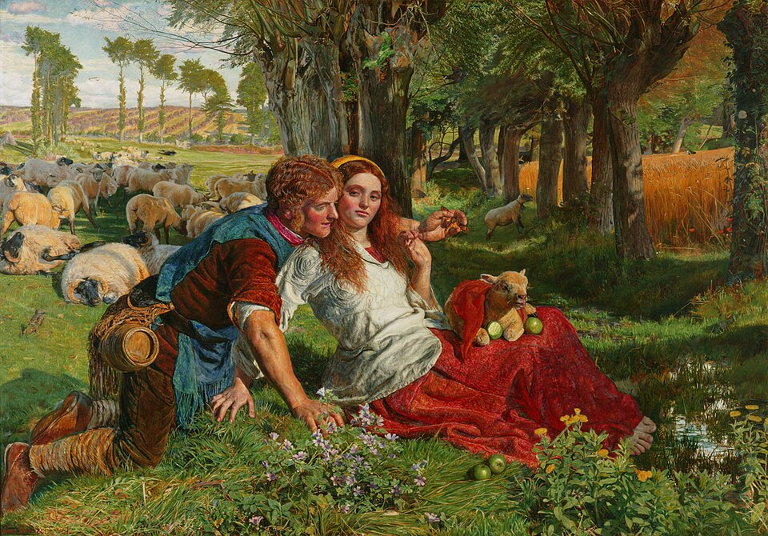
画像を拡大 ＋《雇われ羊飼い》
- 作者
- ウィリアム・ホルマン・ハント
- 制作時期
- 1851年（1852年出品）
- 所在地・所蔵
- マンチェスター市立美術館（1896.29）
- 素材・形式
- 油彩画
出典・画像について
画像を拡大 ＋
《オフィーリア》
- 作者
- ジョン・エヴァレット・ミレイ
- 制作時期
- 1851～1852年
- 所在地・所蔵
- テート（N01506）
- 素材・形式
- 油彩画
出典・画像について
スキャンダルと離散
シダルとエフィーをめぐる出来事
動画 18:48～ラファエル前派には、芸術以外にも多くのスキャンダルがありました。《オフィーリア》のモデル、エリザベス・シダルは帽子店で働いていたところを、ロセッティとスタジオを共有していたウォルター・デヴェレルに見いだされます。彼らは有料のモデルを多く雇わず、身内を起用する傾向がありました。《聖母マリアの少女時代》は母と妹、《イザベラ》は仲間がモデルです。費用だけでなく、親しい相手なら無理な要求も通しやすいという面がありました。
シダルへの要求は過酷でした。寒い中、浴槽に水を張り、下からランプで温め、その中に何時間も浮かばせて描いたのです。ミレイが制作に熱中してランプの火が消えたことに気づかず、彼女は重い風邪をひきました。父親は激怒し、高額の治療費を請求しました。ただし、この事件の責任を取ってミレイが脱退した、という話ではありません。
擁護を機に交流が生まれ、ミレイはラスキン夫妻と旅行しました。そこで妻エフィー・グレイと恋仲になります。旅行後、エフィーはラスキンとの婚姻解消を求め、後にミレイと再婚して八人の子をもうけました。この三角関係は大きなスキャンダルとなり、たびたび映像化もされています。しかし、この騒動の責任を取って前派を離れた、という単純な経緯でもありません。

《ジョン・ラスキンの肖像》
- 作者
- ジョン・エヴァレット・ミレイ
- 制作時期
- 1853～1854年
- 所在地・所蔵
- アシュモレアン美術館（WA2013.67）
- 素材・形式
- 油彩画
出典・画像について
ミレイの成功と仲間の離散
動画 21:19～大きな転機は、1853年にミレイがアカデミーの準会員となったことです。結婚を機に収入が必要となり、細密描写を要する前派の方法では多くの作品を作れないと考えました。八人の子を養うことになる生活の中、卓越したデッサン力で制作を重ね、アカデミーの正会員を経て、亡くなる直前の1896年には会長にまで上り詰めます。

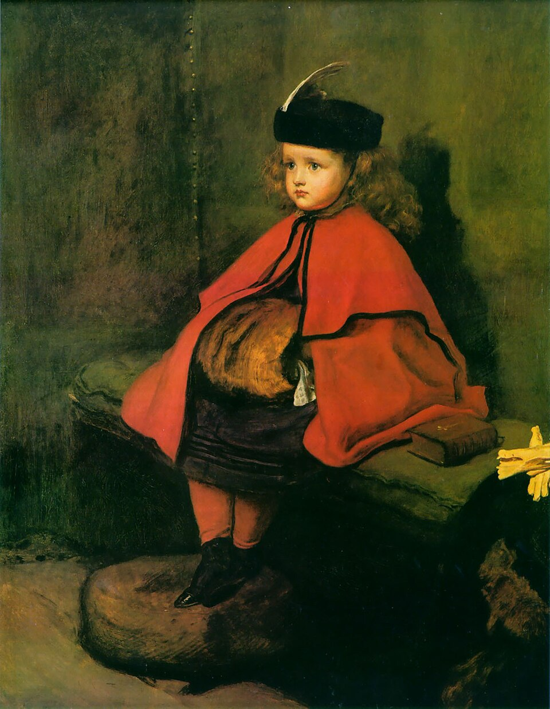
画像を拡大 ＋《初めての説教》
- 作者
- ジョン・エヴァレット・ミレイ
- 制作時期
- 1862～1863年頃
- 所在地・所蔵
- ギルドホール美術館、ロンドン
- 素材・形式
- 絵画（素材は未確定）
出典・画像について
ほかの仲間も同じ頃に散り散りになります。熱心なカトリック教徒コリンソンは、1850年のロセッティの宗教画と相いれず脱退しました。唯一の彫刻家ウールナーは、1852年にゴールドラッシュでの成功を夢見てオーストラリアへ移住します。スティーヴンズは自分の才能に見切りをつけ、美術評論家へ転身しました。弟ウィリアム・マイケルはもともと芸術家ではなく、ハントもミレイが離れた後は独自の絵画を求めて旅へ出ました。
残ったロセッティにも女性関係の問題がありました。シダルと結婚しながら、別の人妻に恋をします。冷えた夫婦関係と娘の死産に心を病んだシダルは、大量の薬を飲んで亡くなりました。1848年に発足した初期メンバーは、1850年代半ばには結束を失っていましたが、その頃ロセッティは後輩のバーン＝ジョーンズとモリスに出会い、新しい交流を深めます。これが第二世代につながりました。
写実を追究したハント
動画 23:30～ハントは離散後、前派を名乗らなくなったものの、初期の理念を最も忠実に守りました。宗教画を描きたいという信念からパレスチナを何度も旅し、現地で見たものを基に写実を徹底します。その影響を受けた画家には、風景画などでリアリズムを追ったジョン・ブレット、水彩の精密描写に取り組んだジョージ・プライス・ボイスがいました。一方、写実を突き詰めた結果、ミレイやロセッティにある詩的表現は少なくなります。

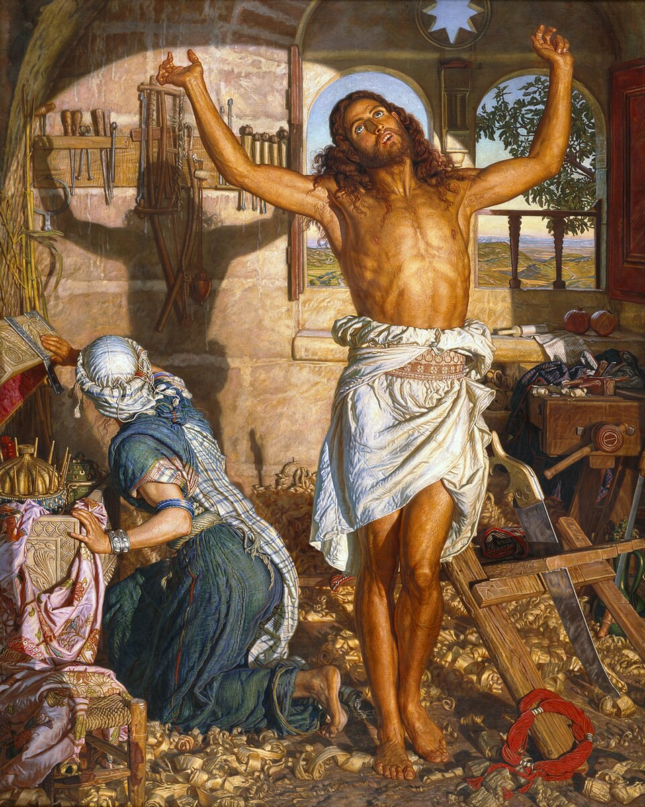
画像を拡大 ＋《死の影》
- 作者
- ウィリアム・ホルマン・ハント
- 制作時期
- 1870～1873年
- 所在地・所蔵
- マンチェスター市立美術館（1883.21）
- 素材・形式
- 油彩画
出典・画像について

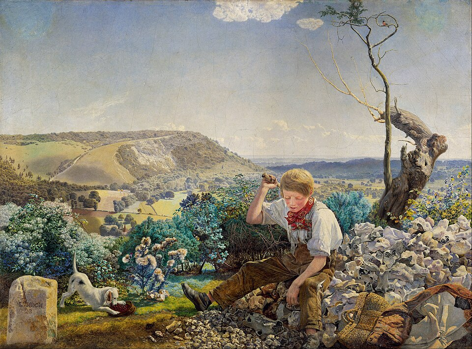
画像を拡大 ＋《石割人夫》
- 作者
- ジョン・ブレット
- 制作時期
- 1857～1858年
- 所在地・所蔵
- ウォーカー美術館、リヴァプール（WAG1632）
- 素材・形式
- 油彩画
出典・画像について

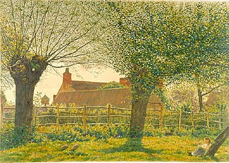
画像を拡大 ＋《オックスフォード近郊のビンジーにて》
- 作者
- ジョージ・プライス・ボイス
- 制作時期
- 1862年9月
- 所在地・所蔵
- セシル・ヒギンズ美術館、ベッドフォード（P.188）
- 素材・形式
- 水彩画
出典・画像について
第二世代と後世への影響
ロセッティと第二世代
動画 24:19～ハントとは対照的に、ロセッティは写実性を薄め、想像力に富む方向へ進みました。バーン＝ジョーンズとモリスは、ラスキンの著作から前派を知ります。1856年、労働者大学で講義していたロセッティにバーン＝ジョーンズが出会い、その友人モリスも加わりました。ミレイやハントと別れたロセッティは、官能的で神秘性に満ちた作品を制作するようになります。
《ボッカ・バチアータ》では、初期ルネサンスのフィレンツェ派ではなく、ティツィアーノらヴェネツィア派の構図を採りました。ティツィアーノはラファエロより後の画家であり、ここには前派という名称や理念の曖昧さも現れます。バーン＝ジョーンズらも写実より神秘性のある女性像を描き、その表現は後の象徴主義の源泉となりました。

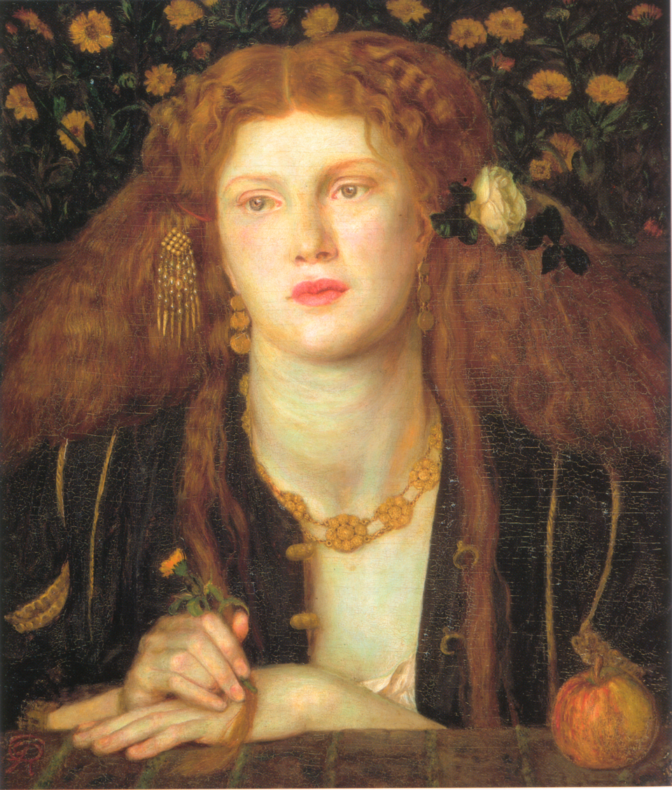
画像を拡大 ＋《ボッカ・バチアータ》
- 作者
- ダンテ・ゲイブリエル・ロセッティ
- 制作時期
- 1859年
- 所在地・所蔵
- ボストン美術館（1980.261）
- 素材・形式
- 油彩画
出典・画像について

《シドニア・フォン・ボルク》
- 作者
- エドワード・バーン＝ジョーンズ
- 制作時期
- 1860年
- 所在地・所蔵
- テート（N05877）
- 素材・形式
- 水彩画
出典・画像について
第二世代にも女性関係の問題がありました。ロセッティは妻シダルがいながら、モリスの妻ジェインに恋をします。1862年、夫婦関係や死産に苦しんだシダルが大量の薬を飲んで亡くなると、彼女を悼んで《ベアタ・ベアトリクス》を描きました。シダルを永遠の淑女ベアトリーチェに、自分を喪に服す詩人ダンテに重ねた作品です。その後もジェインや愛人などさまざまな女性と関係を持ち、彼女たちを描きました。一方、妻の死を機に酒や薬に溺れ、心身を崩していきました。

《ベアタ・ベアトリクス》
- 作者
- ダンテ・ゲイブリエル・ロセッティ
- 制作時期
- 1864～1870年頃
- 所在地・所蔵
- テート・ブリテン（N01279）
- 素材・形式
- 油彩画
出典・画像について
装飾芸術と象徴主義への影響
動画 26:06～1870年代以降はバーン＝ジョーンズとモリスが活躍しました。二人は中世研究を建築や装飾へ生かし、多くのデザインを生みます。特にモリスは、アーツ・アンド・クラフツ運動の中心人物となりました。

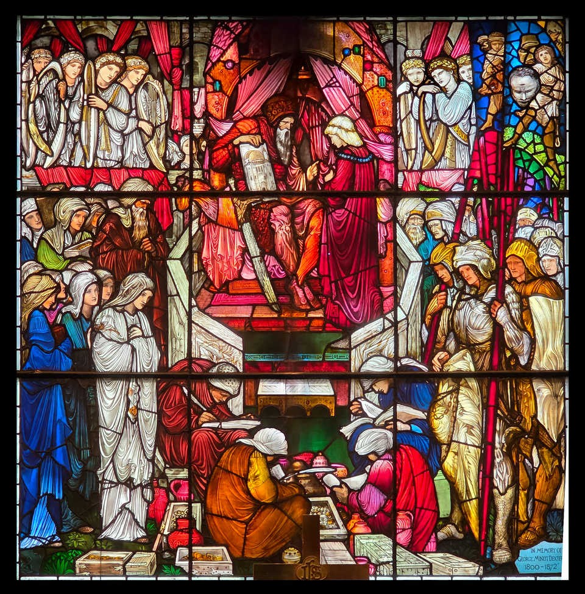
画像を拡大 ＋《ソロモンへのダビデの訓戒》
- 作者
- エドワード・バーン＝ジョーンズ、ウィリアム・モリス
- 制作時期
- 1882年
- 所在地・所蔵
- トリニティ教会、ボストン
- 素材・形式
- ステンドグラス
出典・画像について
ボストンのトリニティ教会にある1882年のステンドグラス《ソロモンへのダビデの訓戒》の全景。現地の原作を撮影。
画像出典：NateBergin / Wikimedia Commons
CC BY 4.0
作品情報：画像出典・利用条件 · 作品・画像・利用条件
直接のメンバーでなくても影響を受けた画家がいます。ミレイの絵画に影響されたと思われるアーサー・ヒューズや、ロセッティと交流しながら加入はしなかったフォード・マドックス・ブラウンも、この時代の細密描写を示す画家です。若い芸術家が伝統へ立ち向かった前派は、理念が曖昧で結び付きも弱く、ほどなく崩壊しました。それでも、その試みはフランスやベルギーへ広がる象徴主義の源泉となりました。

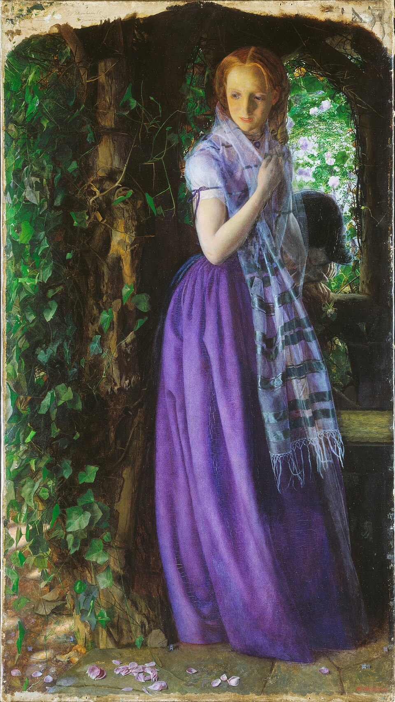
画像を拡大 ＋《四月の恋》
- 作者
- アーサー・ヒューズ
- 制作時期
- 1855～1856年
- 所在地・所蔵
- テート・ブリテン（N02476）
- 素材・形式
- 油彩画
出典・画像について

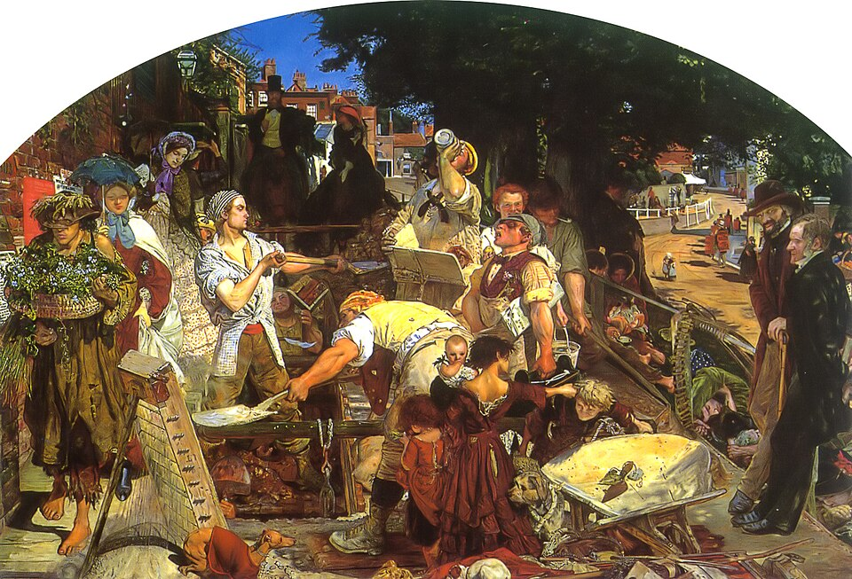
画像を拡大 ＋《労働》
- 作者
- フォード・マドックス・ブラウン
- 制作時期
- 1852～1865年
- 所在地・所蔵
- マンチェスター市立美術館（1885.1）
- 素材・形式
- 油彩画
出典・画像について
マンチェスター所蔵の原画。別版を除外し、所蔵館の制作期間1852～1865年を記載。
画像出典：Ford Madox Brown
Public domain（PD-Art／PDM）
作品情報：作品・画像・利用条件
要点まとめ
- ラファエル前派は19世紀半ばのイギリスで、ラファエロ以前の絵画に立ち返ろうとした運動。1848年秋、ロセッティ、ハント、ミレイを中心とする七人の芸術学校の学生で結成された。
- 18世紀のイギリスは強国となったが、芸術は遅れていた。1768年に設立されたロイヤル・アカデミー・オブ・アーツは、初代会長レノルズのもとでラファエロらの様式グランド・マナーを重視し、学生たちの反発がラファエル前派を生んだ。
- 美術評論家ジョン・ラスキンの「芸術は自然に忠実であれ」という主張と、カルロ・ラジーニオのフレスコ画の版画集が支えとなった。作品にはラファエル前派兄弟団の略「PRB」が秘密の署名として記された。
- 1849年の《聖母マリアの少女時代》（ロセッティ）、《イザベラ》（ミレイ）は順調に売れたが、刊行誌『芽』は四号で廃刊となった。
- 1850年、ロセッティの《受胎告知》とミレイの《大工の仕事場のキリスト》は、宗教画の伝統を損なうとして激しく批判され、ディケンズも非難した。ラスキンはその姿勢を擁護した。
- 宗教画から文学的な主題へ移り、ミレイの《マリアナ》、ハントの《雇われ羊飼い》、『ハムレット』に基づくミレイの《オフィーリア》が成功した。《オフィーリア》のモデルはエリザベス・シダル。
- 1853年にミレイがアカデミーの準会員となり、後に会長に上り詰めた。ほかの初期メンバーも散り、ハントはパレスチナを旅して写実を貫いた。
- ロセッティは後輩のバーン＝ジョーンズとモリスと交流して第二世代を形成し、《ボッカ・バチアータ》《ベアタ・ベアトリクス》など官能的で神秘的な作品を描いた。その表現は象徴主義の源泉となった。
- 1870年代以降、バーン＝ジョーンズとモリスは中世研究を建築や装飾へ生かし、モリスはアーツ・アンド・クラフツ運動の中心人物となった。
確認問題
答えを考えてから開いてください。選択問題は選ぶとすぐ正誤と解説が出ます（選択肢の順番は開くたびに変わります）。各問題のリンクから該当の章や作品カードへ戻れます。
選択問題：0／5問回答・正解0
A. 一問一答答えを考えてから開く
問1ラファエル前派が1849年の作品に刻んだ秘密の署名「PRB」は何の略か。
答えを見る
問2「芸術は自然に忠実であれ」という趣旨の主張でラファエル前派の考えを支え、激しい批判の中で彼らを擁護した美術評論家は誰か。
答えを見る
問31768年に設立され、初代会長レノルズがラファエロらの巨匠の様式（グランド・マナー）を重視した、イギリスの美術機関は何か。
答えを見る
B. 4択選ぶとすぐ正誤と解説
問4ラファエル前派の中心となった三人に含まれない画家は誰か。
→ 本文で確認（ラファエル以前へ戻る運動と四つの目的）
問5ロセッティの《受胎告知》で、宗教画の伝統をないがしろにすると強く非難された点はどれか。
→ 本文で確認（《受胎告知》が招いた批判）
問6ミレイの《マリアナ》と《オフィーリア》が着想を得た作家は誰か。
→ 本文で確認（文学へ主題を移す）
C. 図版問題画像を見て答える
問7この作品の名前と作者を答えよ。モデルとなった女性は誰か。
答えを見る
問8この作品の作者は誰か。
→ 作品カードで確認
問9この作品の名前はどれか。
→ 作品カードで確認